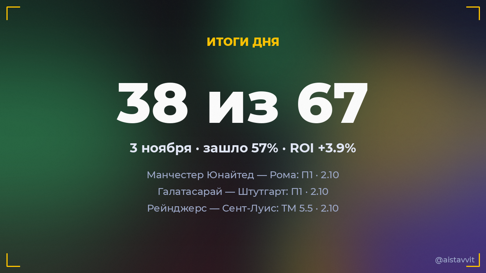

Итоги дня — 3 ноября 2026
Зашло 38 из 67 основных прогнозов (57%), ROI дня +3.9%. Каждый прогноз учтён — и заходы, и промахи.

Все прогнозы дня
🏀 Лейкерс — Майами Хит
П1 (с ОТ) · 1.74138:117 ✅
П1 (с ОТ) · 1.74138:117 ✅
⚽ Чарльтон Атлетик — Болтон Уондерерс
ТМ 2.5 · 2.050:1 ✅
ТМ 2.5 · 2.050:1 ✅
🎾 Бен Шелтон — Кэмерон Норри
Будет 2 сета · 1.612:0 ✅
Будет 2 сета · 1.612:0 ✅
⚽ Шахтёр — Спортинг
П2 · 2.050:1 ✅
П2 · 2.050:1 ✅
⚽ Галатасарай — Штутгарт
П1 · 2.102:0 ✅
П1 · 2.102:0 ✅
🏀 Голден Стэйт — Финикс Санз
П1 (с ОТ) · 1.74116:113 ✅
П1 (с ОТ) · 1.74116:113 ✅
🎾 Тамара Зиданшек — Бьянка Андрееску
Будет 2 сета · 1.620:2 ✅
Будет 2 сета · 1.620:2 ✅
🎾 Каспер Рууд — Рафаэль Ходар
Будет 2 сета · 1.722:0 ✅
Будет 2 сета · 1.722:0 ✅
⚽ Уотфорд — Линкольн Сити
ТМ 2.5 · 1.941:0 ✅
ТМ 2.5 · 1.941:0 ✅
⚽ Дерби Каунти — Норвич Сити
П2 · 2.010:4 ✅
П2 · 2.010:4 ✅
⚽ Престон Норт Энд — Шеффилд Юнайтед
П2 · 1.992:3 ✅
П2 · 1.992:3 ✅
⚽ Вильярреал — ПСЖ
П2 · 1.670:6 ✅
П2 · 1.670:6 ✅
🎾 Эльвина Калиева — Ирен Бурильо
Будет 2 сета · 1.850:2 ✅
Будет 2 сета · 1.850:2 ✅
⚽ Фейеноорд — Интер
П2 · 1.870:3 ✅
П2 · 1.870:3 ✅
⚽ ЛАСК — Слован
ТБ 3.5 · 1.914:0 ✅
ТБ 3.5 · 1.914:0 ✅
⚽ Манчестер Юнайтед — Рома
П1 · 2.103:2 ✅
П1 · 2.103:2 ✅
🎾 София Костоулас — Марина Бассольс Рибера
Будет 2 сета · 1.800:2 ✅
Будет 2 сета · 1.800:2 ✅
⚽ Шапекоэнсе — Мирасол
П2 · 2.051:2 ✅
П2 · 2.051:2 ✅
🏒 Коламбус — Колорадо
ТБ 6.5 · 2.027:2 ✅
ТБ 6.5 · 2.027:2 ✅
⚽ Интернасьонал — Коритиба
П1 · 1.601:0 ✅
П1 · 1.601:0 ✅
🏒 Рейнджерс — Сент-Луис
ТМ 5.5 · 2.103:1 ✅
ТМ 5.5 · 2.103:1 ✅
🏒 Нью-Джерси — Эдмонтон
ТБ 6.5 · 2.104:3 ✅
ТБ 6.5 · 2.104:3 ✅
🎾 Меи Ямагучи — Жибек Куламбэйева
Будет 2 сета · 1.850:2 ✅
Будет 2 сета · 1.850:2 ✅
🎾 Ребека Масарова — Алис Тюбелло
Победа: Алис Тюбелло · 1.510:2 ✅
Победа: Алис Тюбелло · 1.510:2 ✅
🏒 Ванкувер — Анахайм
ТБ 6.5 · 1.704:5 ✅
ТБ 6.5 · 1.704:5 ✅
🎾 Алисия Паркс — Александра Эала
Будет 2 сета · 1.680:2 ✅
Будет 2 сета · 1.680:2 ✅
🎾 Химэно Сакацумэ — Тереза Валентова
Будет 2 сета · 1.770:2 ✅
Будет 2 сета · 1.770:2 ✅
🎾 Анастасиа Захарова — Полина Иатсенко
Будет 2 сета · 1.852:0 ✅
Будет 2 сета · 1.852:0 ✅
🎾 Мэддисон Инглис — Майя Джойнт
Будет 2 сета · 1.860:2 ✅
Будет 2 сета · 1.860:2 ✅
🎾 Талия Гибсон — Александра Олейникова
Будет 2 сета · 1.842:0 ✅
Будет 2 сета · 1.842:0 ✅
🎾 Даяна Ястремская — Зейнеп Сёнмез
Будет 2 сета · 1.860:2 ✅
Будет 2 сета · 1.860:2 ✅
🎾 Кантен Алис — Артур Фери
Будет 2 сета · 1.852:0 ✅
Будет 2 сета · 1.852:0 ✅
🎾 Джил Тайхманн — Джоанна Гарланд
Будет 2 сета · 1.860:2 ✅
Будет 2 сета · 1.860:2 ✅
🎾 Оксана Селехметьева — Теодора Костович
Будет 2 сета · 1.842:0 ✅
Будет 2 сета · 1.842:0 ✅
🎾 Линда Фрухвиртова — Уероника Фалкоуска
Будет 2 сета · 1.770:2 ✅
Будет 2 сета · 1.770:2 ✅
🎾 Нуну Боржеш — Моиз Куаме
Будет 2 сета · 1.582:0 ✅
Будет 2 сета · 1.582:0 ✅
🎾 Томми Пол — Хольгер Руне
Будет 2 сета · 1.572:0 ✅
Будет 2 сета · 1.572:0 ✅
🏀 Клипперс — Торонто Рэпторс
П2 (с ОТ) · 1.56118:125 ✅
П2 (с ОТ) · 1.56118:125 ✅
🏒 Питтсбург — Вегас
ТБ 6.5 · 1.832:3 ❌
ТБ 6.5 · 1.832:3 ❌
⚽ Вест Бромвич Альбион — Саутгемптон
ТБ 2.5 · 1.681:1 ❌
ТБ 2.5 · 1.681:1 ❌
🏒 Вашингтон — Даллас
ТМ 5.5 · 2.055:6 ❌
ТМ 5.5 · 2.055:6 ❌
🏒 Филадельфия — Миннесота
ТМ 5.5 · 2.102:4 ❌
ТМ 5.5 · 2.102:4 ❌
🏒 Торонто — Юта
ТБ 6.5 · 1.742:3 ❌
ТБ 6.5 · 1.742:3 ❌
🎾 Панна Удварди — Робин Монтгомери
Будет 2 сета · 1.851:2 ❌
Будет 2 сета · 1.851:2 ❌
🏒 Монреаль — Виннипег
ТМ 5.5 · 2.104:5 ❌
ТМ 5.5 · 2.104:5 ❌
🏒 Нэшвилл — Каролина
ТБ 6.5 · 2.054:1 ❌
ТБ 6.5 · 2.054:1 ❌
⚽ Барселона — Астон Вилла
ТБ 4.5 · 2.003:0 ❌
ТБ 4.5 · 2.003:0 ❌
🏒 Тампа-Бэй — Детройт
ТБ 6.5 · 2.104:2 ❌
ТБ 6.5 · 2.104:2 ❌
🎾 Алекс Микельсен — Иржи Леxечка
Будет 2 сета · 1.852:1 ❌
Будет 2 сета · 1.852:1 ❌
⚽ Атлетико — Бавария
1X · 1.690:2 ❌
1X · 1.690:2 ❌
🎾 Хасмин Ортенси — Элизабет Мандлик
Будет 2 сета · 1.862:1 ❌
Будет 2 сета · 1.862:1 ❌
🎾 Бенжамен Бонзи — Тейлор Фриц
Будет 2 сета · 1.761:2 ❌
Будет 2 сета · 1.761:2 ❌
🎾 Новак Джокович — Валантен Вашро
Будет 2 сета · 1.852:1 ❌
Будет 2 сета · 1.852:1 ❌
🎾 Брэндон Накашима — Маттео Берреттини
Будет 2 сета · 1.781:2 ❌
Будет 2 сета · 1.781:2 ❌
🎾 Адолфо Даниел Валлежо — Лёрнер Тьен
Будет 2 сета · 1.781:2 ❌
Будет 2 сета · 1.781:2 ❌
🎾 Гина Феистел — Линда Климовичова
Будет 2 сета · 1.862:1 ❌
Будет 2 сета · 1.862:1 ❌
🎾 Ян-Леннард Штруфф — Артюр Жеа
Победа: Артюр Жеа · 1.502:0 ❌
Победа: Артюр Жеа · 1.502:0 ❌
🎾 Андрей Рублёв — Томас Мартин Этчеверри
Будет 2 сета · 1.711:2 ❌
Будет 2 сета · 1.711:2 ❌
⚽ Куинз Парк Рейнджерс — Бернли
П1 · 1.951:1 ❌
П1 · 1.951:1 ❌
🎾 Викториа Морвэйова — Полина Кудерметова
Будет 2 сета · 1.521:2 ❌
Будет 2 сета · 1.521:2 ❌
🎾 Мария Лурдес Карле — Деспина Папамихаил
Будет 2 сета · 1.861:2 ❌
Будет 2 сета · 1.861:2 ❌
🎾 Александра Шубладзе — Людмила Самсонова
Будет 2 сета · 1.772:1 ❌
Будет 2 сета · 1.772:1 ❌
⚽ Блэкберн Роверс — Сток Сити
ТМ 2.5 · 1.761:2 ❌
ТМ 2.5 · 1.761:2 ❌
🎾 Сорана Кырстя — Мария Тимофеева
Будет 2 сета · 1.852:1 ❌
Будет 2 сета · 1.852:1 ❌
⚽ Портсмут — Суонси Сити
ТМ 2.5 · 1.673:1 ❌
ТМ 2.5 · 1.673:1 ❌
⚽ Будё-Глимт — Лилль
П1 · 1.620:0 ❌
П1 · 1.620:0 ❌
⚽ Бирмингем Сити — Миллуолл
ТМ 2.5 · 1.993:0 ❌
ТМ 2.5 · 1.993:0 ❌
← предыдущий день · следующий день → · статистика бота · прогнозы на сегодня · Telegram-канал